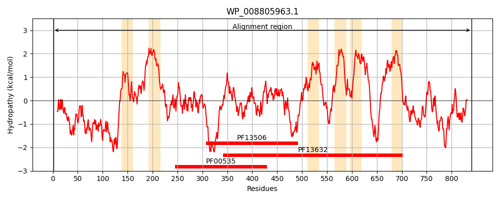
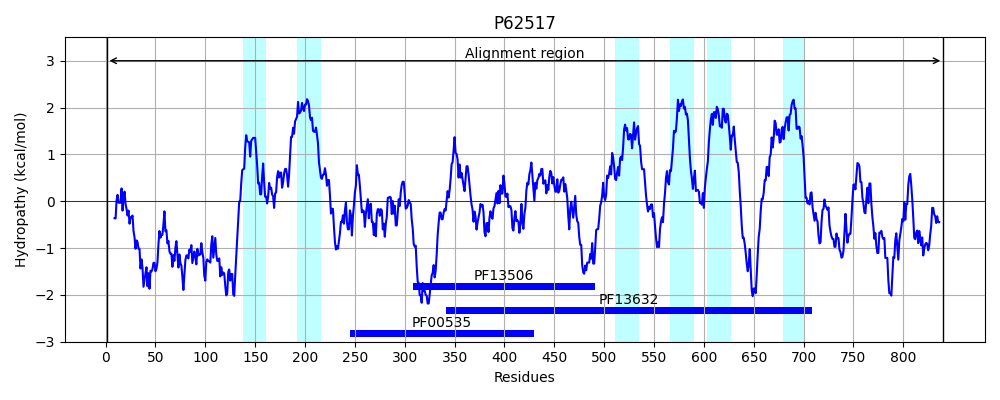
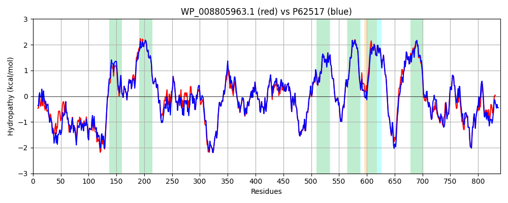

Hit Accession: P62517
Hit TCID: 4.D.3.1.1
Hit Description: gnl|BL_ORD_ID|11170 gnl|TC-DB|P62517|4.D.3.1.1 Glucans biosynthesis glucosyltransferase H OS=Escherichia coli (strain K12) GN=mdoH PE=1 SV=1
Mach Len: 840
e:0.000000
Query TMS Count : 6
Hit TMS Count: 6
TMS-Overlap Score: 6.850000
Predicted Substrates:CHEBI:24280;D-glucosyl group
BLAST Alignment:
Score: 4080 , Bit scores: 1576 bits, E-value: 0.0e+00, Alignment length: 840, Percentage identity: 90
Query: 1 MNKITKYIDALPLSDAEKSALPDTSLQAVHQALDDEHQTFAREDDSPLGSVKARLAHSWPDSLSGDQLVKDDEGRTQLHAMPKARRSSMIPDPWRTNPVGRFWDRLRGRDVTPRYLSRLTQEERESEQKWRTVGTIRRYILLLLTLSQTVVATWYMKTILPYQGWALINPADMVGQNLWISFMQLLPYVLQSGILILFAVLFCWVSAGFWTALMGFLQLLIGRDKYSISASTVGDEPLNPAHRTALIMPICNEDVDRVFAGLRATWESVKATGNAAHFDVYILSDSYNPDICVAEQKAWMELIAEVQGEGQIFYRRRRRRVKRKSGNIDDFCRRWGSQYSYMVVLDADSVMTGECLSSLVRLMEANPNAGIIQSSPRASGMDTLYARCQQFATRVYGPLFTAGLHFWQLGESHYWGHNAIIRVKPFIEHCALAPLPGEGNFAGSILSHDFVEAALMRRAGWGVWIAYDLPGSYEELPPNLLDELKRDRRWCQGNLMNFRLFLVRGMHPVHRAVFLTGVMSYLSAPLWFMFLALSTALQVVHALTEPQYFLQPRQLFPVWPQWRPELAIALFASTMVLLFLPKLLSIILVWCKGPKEYGGFIRVTLSLLLEVLFSVLLAPVRMLFHTVFVVSAFLGWEVVWNSPQRDDDSTPWGEAFMRHGSQLLLGLVWAVGMAWLDLRFLFWLAPIVVSLILSPFVSAISSRATVGLRTKRWKLFLIPEEYSPPQVLKDTDAYLTLNRQRSLDDGFMHAVFNPSFNALATAMATARHRHGHILEIARERHVEQALNETPDKLNRDRRLVLLSDPVTMSRLHYRVWAAPEKYSSWVNAYQQLALNPLALK 840
MNK T+YIDA+P++ +EK+ALP T ++AVHQALD EH+T+AREDDSP GSVKARL +WPDSL+ QL+KDDEGR QL AMP+A+RSSM PDPWRTNPVGRFWDRLRGRDVTPRYL+RLT+EE+ESEQKWRTVGTIRRYILL+LTL+QTVVATWYMKTILPYQGWALINP DMVGQ+LW+SFMQLLPY+LQ+GILILFAVLFCWVSAGFWTALMGFLQLLIGRDKYSISASTVGDEPLNP HRTALIMPICNEDV+RVFAGLRATWESVKATGNA HFDVYILSDSYNPDICVAEQKAWMELIAEV GEGQIFYRRRRRRVKRKSGNIDDFCRRWGSQYSYMVVLDADSVMTG+CL LVRLMEANPNAGIIQSSP+ASGMDTLYARCQQFATRVYGPLFTAGLHFWQLGESHYWGHNAIIRVKPFIEHCALAPLPGEG+FAGSILSHDFVEAALMRRAGWGVWIAYDLPGSYEELPPNLLDELKRDRRWC GNLMNFRLFLV+GMHPVHRAVFLTGVMSYLSAPLWFMFLALSTALQVVHALTEPQYFLQPRQLFPVWPQWRPELAIALFASTMVLLFLPKLLSI+L+WCKG KEYGGF RVTLSLLLEVLFSVLLAPVRMLFHTVFVVSAFLGWEVVWNSPQRDDDST WGEAF RHGSQLLLGLVWAVGMAWLDLRFLFWLAPIV SLILSPFVS ISSRATVGLRTKRWKLFLIPEEYSPPQVL DTD +L +NRQRSLDDGFMHAVFNPSFNALATAMATARHR +LEIAR+RHVEQALNETP+KLNRDRRLVLLSDPVTM+RLH+RVW +PE+YSSWV+ Y+ + LNPLAL+
Sbjct: 1 MNKTTEYIDAMPIAASEKAALPKTDIRAVHQALDAEHRTWAREDDSPQGSVKARLEQAWPDSLADGQLIKDDEGRDQLKAMPEAKRSSMFPDPWRTNPVGRFWDRLRGRDVTPRYLARLTKEEQESEQKWRTVGTIRRYILLILTLAQTVVATWYMKTILPYQGWALINPMDMVGQDLWVSFMQLLPYMLQTGILILFAVLFCWVSAGFWTALMGFLQLLIGRDKYSISASTVGDEPLNPEHRTALIMPICNEDVNRVFAGLRATWESVKATGNAKHFDVYILSDSYNPDICVAEQKAWMELIAEVGGEGQIFYRRRRRRVKRKSGNIDDFCRRWGSQYSYMVVLDADSVMTGDCLCGLVRLMEANPNAGIIQSSPKASGMDTLYARCQQFATRVYGPLFTAGLHFWQLGESHYWGHNAIIRVKPFIEHCALAPLPGEGSFAGSILSHDFVEAALMRRAGWGVWIAYDLPGSYEELPPNLLDELKRDRRWCHGNLMNFRLFLVKGMHPVHRAVFLTGVMSYLSAPLWFMFLALSTALQVVHALTEPQYFLQPRQLFPVWPQWRPELAIALFASTMVLLFLPKLLSILLIWCKGTKEYGGFWRVTLSLLLEVLFSVLLAPVRMLFHTVFVVSAFLGWEVVWNSPQRDDDSTSWGEAFKRHGSQLLLGLVWAVGMAWLDLRFLFWLAPIVFSLILSPFVSVISSRATVGLRTKRWKLFLIPEEYSPPQVLVDTDRFLEMNRQRSLDDGFMHAVFNPSFNALATAMATARHRASKVLEIARDRHVEQALNETPEKLNRDRRLVLLSDPVTMARLHFRVWNSPERYSSWVSYYEGIKLNPLALR 840 | Protein Hydropathy Plots: |
|---|
|  |  |
Pairwise Alignment-Hydropathy Plot:
|
|---|
|  |